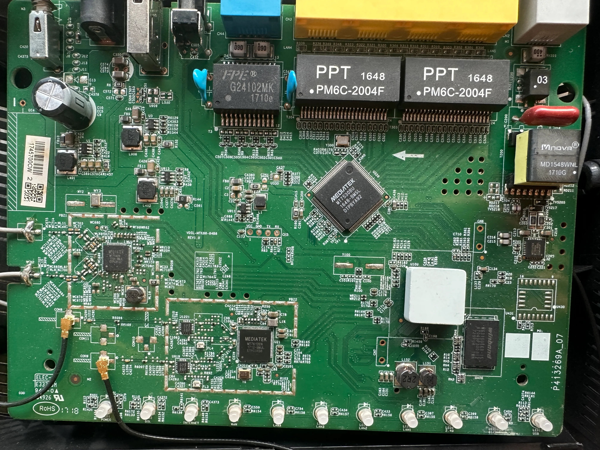
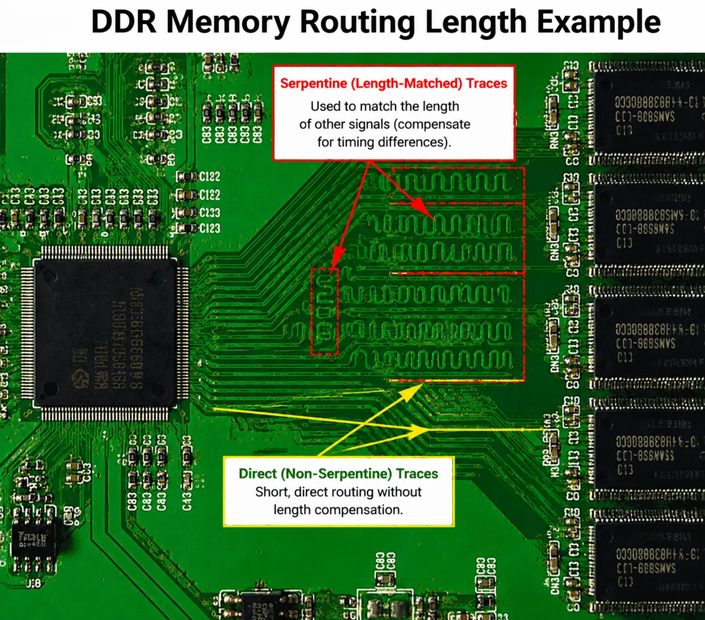
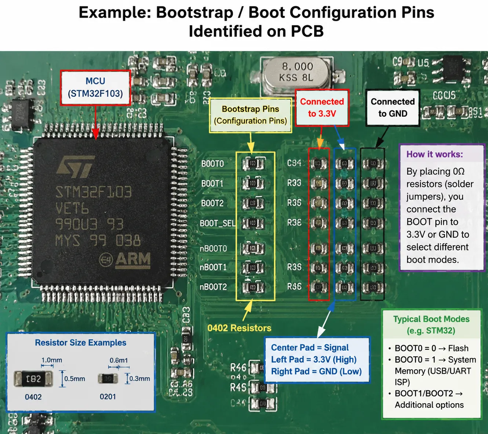

Errors are inevitable — read critically.
Contents
- Pull-up / Pull-down Resistors: The logical foundation of digital circuits, and why Flash chips need pull-down resistors.
- Chip Pin Identification: Universal pin-1 locating methods and the counterclockwise numbering rule.
- The Three Storage Chips (SDRAM / NOR / NAND): Purpose, package, markings, and reverse-engineering value compared side by side.
- Locating Firmware: How board layout reveals which chip holds the firmware.
- PCB Reverse Engineering in Practice: Without silkscreen — serpentine traces → RAM, BGA → CPU, SOP → Flash.
- Debug Interface Identification: Pin count, layout, and telltale signs for UART / SWD / JTAG / Boot Pins.
- Non-Standard Jumper Points: Via matrices, I²C/SPI sniffing, test points, and blind circuit tracing.
I. Pull-Up and Pull-Down Resistors
Pull-up and pull-down resistors are two common configurations used in digital circuits to hold a signal line at a defined logic level when it is not being actively driven.
Voltage and logic relationship:
- Logic 1 (High Level): Typically equals the supply voltage (e.g., 3.3V or 5V).
- Logic 0 (Low Level): Typically equals ground voltage (GND, i.e., 0V).
1. Pull-Up Resistor
- Definition: Connected between the power supply (Vcc) and the signal line. When the signal line is not driven, the resistor pulls it to logic high (1).
- Purpose:
- Keeps the input at a defined high level when floating, preventing undefined states.
- Commonly used for push buttons, switches, etc.
- Example:
- Button not pressed → signal line connected to Vcc via pull-up resistor → logic high (1).
- Button pressed → signal line shorted directly to ground, whose resistance is far lower than the pull-up resistor → logic low (0).
Q: Why is a pull-up resistor needed? (Solving the “floating” problem)
A: From a digital chip input pin’s perspective, if it’s connected to nothing (floating), it is highly susceptible to ambient electromagnetic interference, causing the level to bounce randomly between 0 and 1. This is a logic disaster — the chip has no idea what it’s reading. The pull-up resistor’s job: when nothing is actively pulling the line, forcibly drag it to high.
2. Pull-Down Resistor
- Definition: Connected between the signal line and ground (GND). When the signal line is not driven, the resistor pulls it to logic low (0).
- Purpose:
- Keeps the input at a defined low level when floating.
- Current is near zero with no external signal, creating a stable input state; current flows only when an external signal is present.
- Example:
- Switch not pressed → signal line grounded via pull-down resistor → logic low (0).
- Switch pressed → signal line connected to Vcc via switch → logic high (1).
3. When to Use Which
| Bus Idle State | Resistor Type | Typical Use Cases |
|---|---|---|
| High | Pull-Up | UART RX, I²C (SCL/SDA) |
| Low | Pull-Down | Some Chip Select signals |
Bus idle state: The default voltage level of a bus or interface when no data is being transmitted.
Common protocol idle states:
- UART: Idle is high. A high line means no data; a low (start bit) signals the beginning of transmission.
- I²C: Both SCL and SDA idle high. A falling edge on SDA while SCL is high = start condition.
- SPI: Idle state depends on Clock Polarity (CPOL) and Chip Select. Usually, the interface is idle when chip select is high.
4. Why Flash Chips Use Pull-Down Resistors (Stabilizing Logic 0)
When power is applied to a Flash chip, the controller/programmer reads pin states (address lines, data lines, mode select pins). These pins must stabilize at their specified logic levels the moment power is applied.
-
Problem with too large a pull-down resistor: Large resistance → low current → leakage current / coupled noise / internal weak pull-ups can cause the level to drift → Flash fails to recognize control signals → read failure.
-
Analogy (water flow model):
- Voltage source = water tank level
- Resistor = pipe diameter
- Current = water flow rate
- Pull-down resistor too large = pipe too thin, flow insufficient to pull the water level down.
Conclusion: Flash chips use pull-down resistors to ensure pin voltages are reliably held at logic low at power-on, preventing floating or interference from causing erroneous states, and ensuring the chip enters the correct operating mode.
5. Summary: Pull-Down vs. Pull-Up
| Characteristic | Pull-Down Resistor | Pull-Up Resistor |
|---|---|---|
| Default State | Logic 0 (GND) | Logic 1 (Vcc) |
| Primary Goal | Keep system in “quiet / off” state | Keep system in “ready / enabled” state |
| Safety | Prevents accidental triggers, safer for data | Can inadvertently activate the chip |
| Common Applications | Mode selection, reset pins, write-protect pins | I²C bus, interrupt signals, handshake signals |
II. Identifying Chip Pins
Pin 1 Location Markers
- A hollow dot
- An arrow mark
- The number “1” printed directly
Pin Numbering Rule
Starting from pin 1, pins are numbered counterclockwise (this applies to all chips).
III. NAND Flash Data Handling Notes
Core Concepts
- Data Area: Stores the actual content. What the programmer reads = data + ECC information.
- OOB (Out of Band): The extra data region used to store ECC (Error Correction Code).
- Actual space allocation: Check the chip datasheet. A common layout is
0x800 (data) + 0x40 (ECC). - Runtime behavior: When the program loads into memory, only the data content is loaded; the ECC data is not read into RAM.
NOR Flash vs. NAND Flash
| Type | Purpose | Volatile | Typical Contents |
|---|---|---|---|
| SDRAM | Runtime memory | Yes | Code/data loaded at boot |
| NOR Flash | Boot + firmware (sometimes full rootfs) | No | Bootloader, Kernel, rootfs |
| NAND Flash | Storage | No | rootfs, config files, logs |
References:
- NAND Flash OOB Explained
- MRCTF2022 IoT Challenge — NAND Data Analysis
- CSDN: NAND Flash Analysis
- CTF IoT Analysis Examples
Identifying Valid Data
“Since there is no uniform format for BootLoader file structures, one must analyze regions further into the file, looking for patterned data blocks (e.g., all-0x00 regions, consecutive string regions, special file structures).”
These patterned regions help distinguish valid data from invalid data. Observing byte patterns allows you to reconstruct the correct byte ordering.
IV. Identifying SDRAM / NOR Flash / NAND Flash
Quick Comparison
| Type | Purpose | Volatile | Typical Contents |
|---|---|---|---|
| SDRAM | Runtime memory | ✅ Yes | Code/data loaded at boot |
| NOR Flash | Boot + firmware (sometimes full rootfs) | ❌ No | Bootloader, Kernel, rootfs |
| NAND Flash | Storage | ❌ No | rootfs, config files, logs |
SDRAM (Synchronous Dynamic Random Access Memory)
- Common markings:
DDR,SDRAM,MT,H5,K4
NOR Flash
- Supports XIP (Execute-In-Place) — code can run directly from the Flash chip.
- Characteristics:
- Smaller capacity (typically 8–64 MB)
- SPI or parallel interface
- 8-pin SOIC (SPI NOR) or TSOP package
- Common markings:
W25Q,MX25,S25,EN25 - Reverse-engineering value: Easiest chip to dump, clean offsets, virtually no wear-leveling interference.
NAND Flash
- Block-based storage, requires ECC.
- Characteristics:
- Larger capacity (128 MB+)
- TSOP-48 or BGA package
- Numerous address/data lines
- Common markings:
MT29F,K9F,TC58 - Complications: Bad blocks, ECC, wear leveling — raw dumps often appear “corrupt” without controller logic.
V. Locating Firmware / Filesystem Position
Step 1: Identify Storage Chips
- Read chip markings → search the part number
- Check the package type
Step 2: Use Board Layout Clues
- Flash closest to the CPU → usually boot NOR
- Largest Flash chip → usually NAND (filesystem)
- SDRAM hallmarks: many length-matched traces, nearby termination resistors
Step 3: Dump the Flash
- SPI NOR → use
flashrom - NAND → use a programmer, or desolder and use a reader
Common Filesystem Layout Patterns
NOR-only device:
[ bootloader ][ kernel ][ rootfs ]
NOR + NAND device:
NOR: bootloader + kernel
NAND: rootfs + data
Once you know these patterns, you can often tell at a glance which chip to dump first.
PCB Reverse-Engineering Tricks
- Follow the boot pins: SPI traces → NOR; wide parallel bus → NAND; DDR traces → SDRAM
- UART boot logs: Often print lines like
Loading kernel from SPI flash...orMounting rootfs from NAND..., giving you the answer instantly.
Vulnerability Research Angle
| Target | Storage Type |
|---|---|
| Bootloader bugs | NOR Flash |
| Web / service bugs | NAND rootfs |
| Runtime RCE (Remote Code Execution) | SDRAM only |
Attack surface mapping starts from memory type.
VI. Reverse-Engineering a PCB
When you cannot read chip silkscreen markings, PCB reverse engineering relies on layout logic, trace characteristics, peripheral component patterns, and signal integrity design principles.

1. Locate the CPU / SoC (System on Chip)
- Central role: The BGA (Ball Grid Array) chip with the most pins, largest package, and densest routing.
- Bus hub: All signals converge here. Massive numbers of traces radiate out to RAM, Flash, Ethernet, etc.
- Power characteristics: Surrounded by multiple inductors (square black components) and many small decoupling capacitors, since the main controller requires multiple low-voltage, high-current supply rails.
2. Locate DRAM (Memory)
- Length-matched traces (serpentine traces): The most reliable indicator of RAM. To ensure high-speed data synchronization, traces between the CPU and RAM must be equal in length, appearing as parallel wiggly lines.
- Adjacent to the CPU: DDR signals operate at extremely high frequencies; to minimize interference, the RAM chip is placed right next to the CPU.
- Package: Typically a rectangular BGA.

3. Locate Flash (Firmware Storage)
- Relatively sparse routing: SPI Flash usually has only 8–16 pins, with far simpler routing than RAM.
- Common packages: SOP-8 or wide SOP-16; large-capacity NAND Flash uses rectangular multi-pin TSOP.
- Position: Close to the CPU, but distance requirements are less strict than for RAM.
4. Locate Debug Ports (UART)
- Header/pad characteristics: Usually 3–4 consecutive unpopulated pads or soldered pin headers.
- Signal logic: One pad connected to the large ground plane (GND), one to 3.3V power, and the other two (TX/RX) routed directly to the CPU.
- Silkscreen hints: May have
VCC, GND, TX, RXlabels, or no markings at all but neatly aligned near the CPU.
5. Other Functional Modules for Triangulation
| Module | Identifying Features | Reverse-Engineering Logic |
|---|---|---|
| Network Interface (PHY / Switch) | Near RJ45 jack, connected to a black rectangular network transformer | The chip on the other side of the transformer = switch chip or CPU |
| RF (Wi-Fi / Radio) | Under a shield can, connected to black or grey antenna coax | Follow the antenna cable to its endpoint = wireless chip (or directly to SoC if integrated) |
| PMU (Power Management Unit) | Near the DC power jack, surrounded by large inductors and electrolytic capacitors | Handles voltage conversion, supplies power to CPU and RAM |
Reverse-Engineering Cheat Sheet
- Follow the traces: Serpentine → RAM, thick traces → power, dense traces → CPU.
- Follow the peripherals: Ethernet jack → PHY, antenna → RF, power jack → PMU.
- Read the package: Large square → SoC, rectangle → RAM, small rectangle → Flash.
VII. Debug Pin Reverse Identification
1. Bootstrap Pins (Boot Configuration Pins)
These are not used for ongoing communication, but determine where the chip boots from (Flash boot vs. USB programming mode).
- How to spot them:
- A cluster of neatly aligned small resistors (0402 or 0201 package) near the CPU. One end connects to CPU signal lines; the other end connects to either a high level (3.3V/1.8V) or ground.
- Three pads side by side: the middle one carries the signal, the outer two go to high and ground. Soldering a 0Ω resistor to one side changes the boot mode.
- Reverse-engineering logic: If you need to force the chip into programming mode (e.g., to bypass the original bootloader), find these resistors and short them.

2. Common Debug Interfaces at a Glance
| Interface | Pin Count | Typical Layout | How to Identify |
|---|---|---|---|
| UART | 3–4 | 1×4 linear | TX/RX show voltage fluctuation; levels typically 3.3V |
| SWD (ARM only) | 2–4 | 1×4 or pads | ARM cores only; CLK pin shows a steady frequency |
| JTAG | 5–20 | 2×N array or continuous pads | Matching resistors between pins; signals route directly to CPU core |
| Boot Pin | 1–4 | Resistor cluster | Near CPU; connected to VCC or GND via resistors |
VIII. Finding Jumper Points on Non-Standard Interfaces
Once you’ve ruled out UART, SWD, and JTAG, you’re dealing with non-standard debugging or low-level hardware configuration.
1. Find Bootstrap / Strapping Pins
- Look for rows of 0Ω resistors or unpopulated resistor pads near the CPU (one end to a signal, the other to 3.3V or GND).
- Changing one pin’s level (e.g., high → low) may force the system into Recovery Mode — which is a form of debugging in itself.
2. Probe Through the Via Matrix
- The vias surrounding a BGA chip are natural test points.
- Method: Use a multimeter in continuity mode. Hold one probe on a Flash chip pin (e.g., CLK), and sweep the other probe across the via array near the CPU to identify which vias connect directly to the core bus.
- Scrape the solder mask: For vias without exposed pads, gently scrape off the green solder mask with a scalpel to expose the copper underneath, allowing you to solder a jump wire for logic analysis.
3. Find I²C / SPI Sniffing Points
- Targets: 8-pin or 16-pin small chips on the board (e.g., EEPROMs or sensors).
- I²C: Look for a pair of pull-up resistors (typically 4.7kΩ) connected to 3.3V.
- SPI: Look for pins 1, 2, 5, and 6 of a Winbond Flash chip.
- These buses often carry critical configuration data or encryption keys. Hooking up a logic analyzer to these points enables side-channel debugging.
4. Identify Isolated Test Points (TP)
Small gold circles scattered across the board, often labeled with TP numbers:
- Static TPs: Measure voltages (1.1V core, 1.8V RAM, 3.3V I/O).
- Dynamic TPs: Key clock signals (CLK) or reset signals (RESET).
- How to tell: Probe with an oscilloscope. A steady 25MHz or 40MHz sine wave = crystal oscillator clock test point. A signal that jumps at power-on then stays high = Reset pin.
5. Blind Circuit Tracing
- Identify the ground plane (GND): Large copper pours or the negative terminal of electrolytic capacitors.
- Trace the power tree: Start at the DC power jack → follow inductors (components marked
1R2or4R7) → the vias after the inductor are the main power rails. - Map interconnects:
- CPU → RAM: Groups of length-matched serpentine traces.
- CPU → Ethernet: Trace backwards from the network transformer pins.
- CPU → Storage: Trace backwards from the Flash chip’s 8 pins.
The Golden Jumper Location
The 6 SPI bus traces between the CPU and the Flash chip.
Once you attach jump wires to the SPI bus, you can read the entire instruction stream at runtime — and even attach your own external Flash to replace the original firmware.